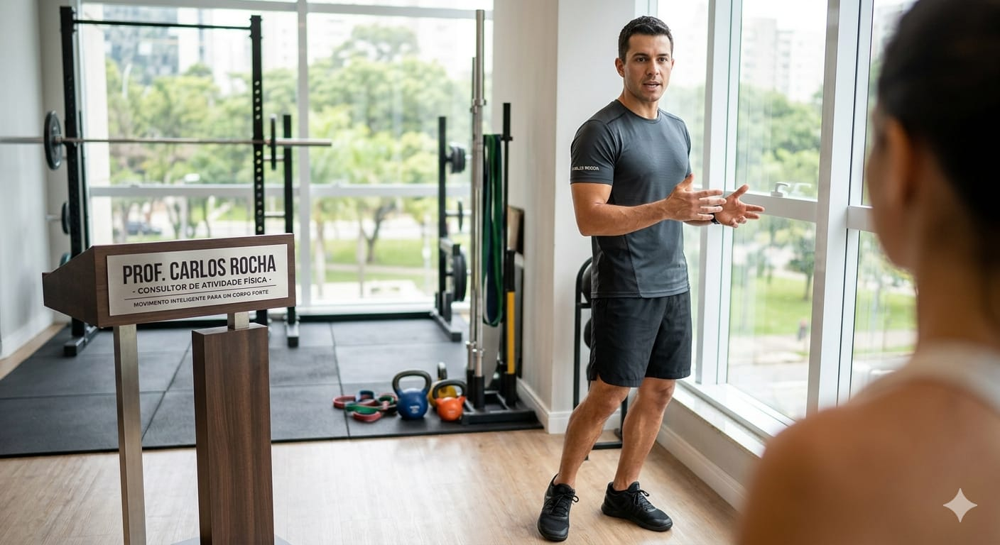

Por trás de toda jornada de bem viver, existe um time. Na Bem Viver, reunimos três profissionais que compartilham uma mesma convicção: cuidar de uma pessoa é cuidar de um todo. Corpo, mente e movimento não são compartimentos separados — são dimensões de uma mesma vida. Conheça quem irá caminhar com você.
Dra. Sofia Mendes
Nutrição consciente para uma vida leve e energética.
Nossa nutricionista clínica e esportiva, dedicada a transformar a sua relação com a comida. Com mais de uma década de experiência, Sofia desmistifica dietas restritivas e promove uma abordagem gentil e educativa, focada na alimentação consciente e sustentável.
Ela acredita que a nutrição vai além de calorias, sendo a base para uma vida plena, e que cada indivíduo possui necessidades únicas. Se você busca equilíbrio, vitalidade e uma relação saudável com o que come, a Dra. Sofia irá guiá-lo nessa jornada de redescoberta e bem-estar.
Dr. Ricardo Almeida
Desbloqueando o seu potencial mental para uma vida plena.
Nosso psicólogo, especializado em psicologia cognitivo-comportamental. Ricardo entende que a mente é o principal motor para a mudança, e que o equilíbrio emocional é crucial para a adesão a novos hábitos de saúde e fitness.
Com 8 anos de atuação, ajuda a identificar e superar barreiras psicológicas — como a gestão de stress e a falta de motivação — que impedem o progresso. Sua abordagem é calma, analítica e encorajadora, oferecendo um ambiente seguro para que você possa explorar seus desafios internos e alcançar a sua melhor versão física e emocional.

Prof. Carlos Rocha
Movimento inteligente para um corpo forte, funcional e livre de limitações.
Nosso consultor de atividade física, especialista em treinamento funcional, condicionamento físico e reabilitação esportiva. Com 12 anos de experiência, defende que o movimento é a essência da vida — e que a atividade física deve ser prazerosa e adaptada às capacidades e objetivos de cada um.
Carlos promove a consciência corporal e a técnica correta, ajudando a prevenir lesões e a otimizar cada movimento. Dinâmico, motivador e atento aos detalhes, ele irá inspirá-lo a encontrar a paixão pelo movimento e a construir um corpo forte, funcional e livre de limitações.
Três especialistas, uma filosofia em comum: cuidar de quem busca viver melhor — no seu tempo, no seu corpo, na sua vida. Marque uma conversa e descubra como podemos caminhar com você.
← Voltar ao blog